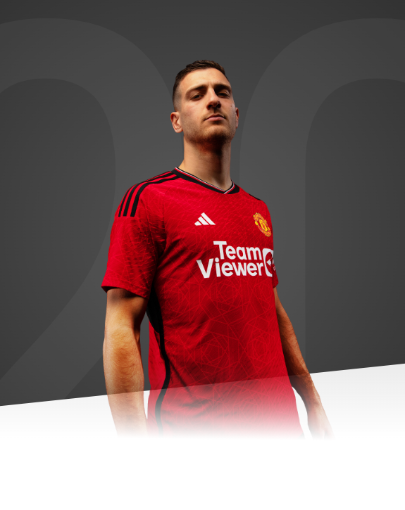

I will give everything for this club, for this shirt and, hopefully, help the club to win. That's the most important thing.

AGE
24
APPEARANCES
117
CLEAN SHEETS
3
BIOGRAPHY
Diogo Dalot remains a promising talent and has already achieved so much in his fledgling career.
The full-back has been turning heads with his footballing ability, since the age of six, when he joined Fintas Academy in his hometown of Braga.
With a host of Portugal's biggest clubs monitoring the defender, Dalot joined Porto's youth system in 2008 at the age of nine and blossomed into a typical modern full-back.
The Portuguese is blessed with natural pace, an appetite to attack and has a fine cross in his armoury of skills.
Having been capped by Portugal at youth level from Under-15s to Under-21s, Diogo has already tasted success on the international stage - notably, at the Under-17 European Championship in 2016, when he scored two crucial goals during his five appearances and was named in the Team of the Tournament.
In 2014/15, a brief loan spell at Padroense in the Portuguese Second Division, and several impressive displays for Porto's Reserves team, paved the way for Dalot to progress into the first team.
He only made his senior debut for the club in October 2017 and didn't appear in the Portuguese Primeira Liga until February 2018, but his early form gave real signs of encouragement.
Diogo went on to make 33 appearances in the 2017/18 season - including one in the knockout stages of the Champions League - and he registered four goals and eight assists. Such was the teenager’s undoubted ability, former manager Jose Mourinho acted quickly to secure the signature of his Portuguese compatriot.
He was one of three new additions at Old Trafford in the summer of 2018, but joined the club with a long-term knee injury which prevented him from making his first-team debut until mid-September, during a 3-0 Champions League win against Young Boys.
It was a solid start from Dalot and one he repeated a week later when he played in front of the Old Trafford faithful for the first time, in a Carabao Cup tie against Derby County. Dalot finished his first term in England with a healthy 23 appearances to his name and was selected in high-profile matches against Arsenal, Liverpool and Tottenham Hotspur.
He also played a huge part in United's progression to the Champions League quarter-final stage. It was the defender's bullet of a shot that was adjudged to have hit Presnel Kimpembe on the arm, and resulted in our injury-time winner against Paris Saint-Germain in the last 16.
Dalot scored his first goal for United in a 6-0 FA Cup win at Tranmere Rovers in January 2020, as he made 11 appearances in his second season at the club.
The Portuguese full-back joined AC Milan in Serie A for the 2020/21 season, with the deal being announced at the beginning of October. The move was a success, and he even played against his parent club in the Europa League, before helping the Rossoneri qualify for the Champions League via second spot in Serie A.
After representing his country at the European Championship finals, he had a mission to make his mark at Old Trafford and scored a header in a pre-season friendly win over Everton. Dalot obtained much more game-time following the arrival of interim manager Ralf Rangnick, and that continuity and rhythm led to consistently high performances at right-back.
By the end of 2021/22, Dalot had made 29 appearances in all competitions for the Reds, starting nine of the final 10 Premier League matches of the season. He was also regularly selected in Portugal's squad for international friendlies and Nations League matches.
Diogo was an undisputed starter in the first half of the 2022/23 campaign under Erik ten Hag, and he helped Portugal to the quarter-finals of the winter World Cup in Qatar.
While the second half of the season saw him face increased competition from the fit-again Aaron Wan-Bissaka for the right-back slot, Dalot won his first piece of silverware as a Red - the 2023 Carabao Cup - and committed his long-term future to the club by signing a new five-year contract.